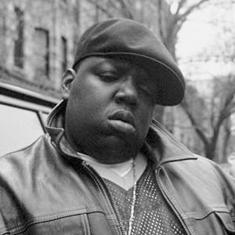

Biggie Smalls Biography (1972–1997)

Biggie Smalls, also known as "The Notorious B.I.G.," was a revered hip-hop artist and face of East Coast gangsta rap. He was shot and killed on March 9, 1997.
Who Was Biggie Smalls?
Christopher Wallace, aka Biggie Smalls and the Notorious B.I.G., lived a short life. He was 24 years old when he was gunned down in 1997 in Los Angeles,
a murder that has never been solved. Smalls was from New York and had almost single-handedly reinvented East Coast hip hop — overtaken in the early 1990s
by the West Coast "g-funk" sound of Dr. Dre and Death Row Records. With his clear, powerful baritone, effortless flow on the mic and willingness to address
the vulnerability, as well as the harshness, of the hustler lifestyle, Smalls swung the spotlight back towards New York and his label home, Bad Boy Records.
He styled himself as a gangster and although he was no angel, in reality he was more of a performer than a hardened criminal. In this regard, he was similar to Tupac Shakur,
his one-time friend turned bitter rival — a contest that spiraled horrifyingly out of control leaving neither man alive to tell the tale.
Early life
Acquiring the childhood nickname "Big" because of his plus-sized girth, he began selling drugs at 12, according to an interview he gave to
the New York Times in 1994, working the streets near his mom's apartment on St. James Place. Voletta worked long hours and had no inkling
of her son's activities. Biggie stepped up the drug dealing after quitting school and was soon in trouble with the law. He received a five-year
probationary sentence in 1989 after being arrested on weapons possession charges. The following year he was arrested for violating that probation.
The year after that, he was charged with dealing cocaine in North Carolina and reportedly spent nine months in jail while waiting to make bail.
Biggie and Bad Boy Records
Biggie began rapping as a teenager to entertain people in his neighborhood. After he got out of jail,
he made a demo tape as Biggie Smalls — named after a gang leader from the 1975 movie Let's Do It Again; also a nod to his childhood nickname.
He had no serious plans to pursue a career in music — "It was fun just hearing myself on tape over beats," he later said in an Arista Records biography —
but the tape found its way to The Source magazine, who were so impressed that they profiled Biggie in their Unsigned Hype column in March 1992; from there,
Biggie was invited to record with other unsigned rappers. This recording came to the attention of Sean "Puffy" Combs, an A&R executive and producer who worked for
the leading urban label Uptown Records — he started there as an intern in 1990. Combs arranged a record deal for Biggie, but left the label soon after,
having fallen out with his boss, Andre Harrell. Combs went on to set up his own imprint, Bad Boy Records, and by mid-1992 Biggie had joined him.